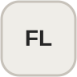
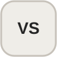
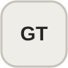

Projects / Mobile
Mobile projects
Selected mobile builds with room for your real screenshots, app demos, descriptions, and tools.
01
Project description
Describe the app, its target users, your role, and the main features you implemented. Keep it short enough to scan but specific enough to show your contribution.
Tools



02
Project description
Use this panel for the second mobile project. You can swap the video for an exported screen recording and replace the tool placeholders with the real stack.
Tools
03
Project description
This third entry is ready for another mobile build. Duplicate or remove project sections as your portfolio grows.
Tools